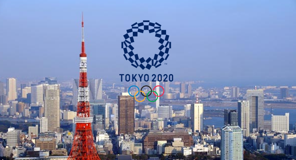
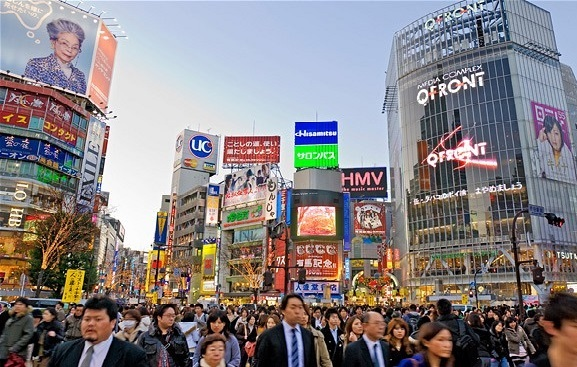

Experience Tokyo City!
To allow our customers complete flexibility in planning their time in Tokyo, there are 3 different event lists available
List #1
Our first list includes a visit to Tokyo's Big Sight, the centre of Tokyo 2020's organisation and planning. Visitors will be given a tour of the building and a few hours to explore. Technology enthusiasts will be excited to see some of the latest technology Japan has to offer.

Later that evening, our travel group will head to Tokyo stadium for the first games. Visitors can expect to see the opening ceremony, the football Olympics and the rugby Olympics on this day. (Please note the opening ceremony event is only available on the 24th of July)

This image was edited in GIMP by merging the inside and outside of the stadium
For those of us who are mesmerised by Tokyo, the rest of the evening is dedicated to exploring the city of Tokyo and all it has to offer. For those who would rather attend an Olympics event, the rendevouz point for our group is the Tokyo Boxing Centre, where the Boxing Olympics will be held. Have fun exploring Tokyo or watching people hit each other, it's up to you!

This image was edited in GIMP by overlaying a transparent .svg of the Olympics logo over the Tokyo skyline.
List #2
Our second list includes a trip to Tokyo's gorgeous coast, where the rowing Olympics and sailing Olympics will take place. For fans of water sports, this is a must-see event! The beach is open for swimming, so it may be a good idea to pack your swim trunks.

Later in the day, our travel group will be taken to the heart of downtown Tokyo, Tokyo Square, to watch the Olympics Urban Skateboarding Events. This is the first year ever for the Olympics to feature Skateboarding. Expect big crowds and a lively atmopshere! As an added bonus, Tokyo square is very safe.

For those of us who are mesmerised by Tokyo, the rest of the evening is dedicated to exploring the city of Tokyo and all it has to offer. This second trip exploring Tokyo's downtown does not include the Olympics boxing event.